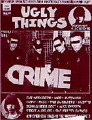
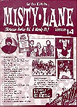

Even if not strictly Outsiders related......
'Zines & More
(Don't forget to add a couple of IRCs for reply!)
MISTY LANE
Edited by Massimo del Pozzo (singer and lead guitarist of The Others, classic
garage sound from Italy). The main focus is on 60's and contemporary garage
with many articles ranging from the bigger to the most obscure bands ("Crude
Sardinian Beat in the 60's"!). This interesting italian 'zine is written
entirely in english, so you have no excuses for not trying it. You can contact
Massimo at the following address:
Massimo del Pozzo
Via L.A. Pascucci 66
00168 Roma
Ag. Post #97 ITALY
Massimo runs also a fine garage label with the same name, wich you can reach
at the same address. Ask for a catalog!
PSEUDONYM RECORDS
Pseudonym reprinted most of the Outsider's discography on CD. If you don't
find them around, you can try from the source:
Pseudonym Records
P.O. BOX 2078
3140 BB Maassluis
Holland
Phone: (10) 5923228
Fax: (10) 5926170
They carry a fine catalog of CD reprints but they don't press many copies
of their releases, which can be difficult to find (and expensive: ask for
prices before ordering).
UGLY THINGS
Edited by Mike Stax (the legendary bass player of The Crawdaddys, The Tell-Tale
Hearts and The Hoods), this is one of the very best 'zines about 60's (but
not only 60's) punk. Contact Mike at the following address:
Mike Stax
3707 Fifth Avenue #145
San Diego, CA 92103 U.S.A.
Phone: (619) 280-3008
Try it, you really can't go wrong.